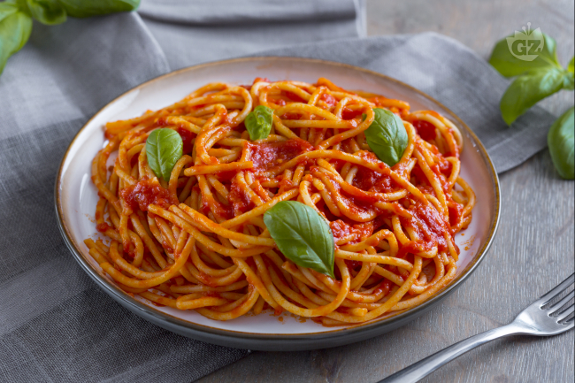

Spaghetti

Easy Weeknight Spaghetti with Meat Sauce
Our favorite weeknight friendly spaghetti recipe with a meat sauce
that is made from scratch. Use ground beef, turkey, pork, chicken, or lamb
to make this simple spaghetti.
It's made using one-pot, is ultra flavorful, and can be made in under 45 minutes.
The spaghetti sauce is also perfect for making ahead of time and can be refrigerated for up to three days
and stored in the freezer for up to three months.
Ingredients
- 1 pound ground meat
- 3 tablespoons olive oil
- 1 cup chopped onion
- 3 garlic cloves
- 2 tablespoons tomato paste
- 1/2 teaspoon dried oregano
- 1 cup water
- 1 (28-ounce) can crushed tomatoes
- Salt and ground black pepper to taste
- Handful fresh basil leaves
- 12 ounces dried spaghetti
- 1/2 cup shredded parmesan cheese
Directions
Make Sauce
- Heat oil in large pot over medium-high heat. Add meat and cook
until browned, about 8 minutes. As meat cooks, use spoon to break
it up into smaller pieces.
- Add onions and cook, stirring every once in a while, until softened,
about 5 minutes.
- Stir in the garlic, tomato paste, and oregano and cook, stirring
continuously for about 1 minute.
- Pour in the water and stir in the tomatoes and a pinch of salt and black pepper.
Bring the sauce to a low simmer. Cook, uncovered, at a low simmer for 23 minutes.
As it cooks, stir and taste the sauce a few times and adjust seasoning accordingly.
Cook Spaghetti
- About 15 minutes before the sauce finishes cooking, bring large pot
of salted water to a boil, and then cook pasta according to package
directions.
To Finish
- Take the sauce off the heat, and then stir in the basil.
Toss in the cooked pasta, and let rest for minute. Toss again and serve
with parmesan sprinkled on top.